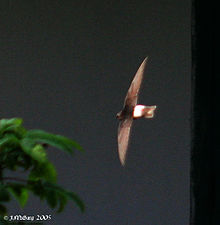
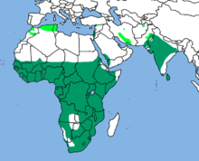
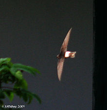
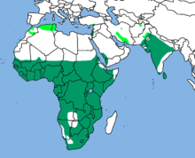

| Little Swift | |
|---|---|
|  | |
| In India. | |
| Conservation status | |
| Binomial name | |
| Apus affinis (JE Gray, 1830) |
|
|  | |
Summer Resident[2] |
| Little Swift | |
|---|---|
|  | |
| In India. | |
| Conservation status | |
| Binomial name | |
| Apus affinis (JE Gray, 1830) |
|
|  | |
Summer Resident[2] |
The Little Swift (Apus affinis), or House Swift, is a small bird, superficially similar to a Barn Swallow or House Martin. It is, however, completely unrelated to those passerine species, since swifts are in the order Apodiformes. The resemblances between the groups are due to convergent evolution reflecting similar life styles. The eastern race, House Swift, is sometimes considered a separate species, Apus nipalensis.
These birds have very short legs which they use only for clinging to vertical surfaces. The scientific name comes from the Greek απους, apous, meaning "without feet". They never settle voluntarily on the ground.
Little Swifts breed around habitation and cliffs from Africa eastwards through southern tropical Asia to western Indonesia. Unlike the more northerly Common Swift, many birds are resident, but some populations are migratory, and winter further south than their breeding areas. They wander widely on migration, and are seen as rare vagrants in much of Europe and Asia.
Little Swifts build their nests in hole in buildings or sometimes on cliffs, laying 1-4 eggs. A swift will return to the same site year after year, rebuilding its nest when necessary. A species of bedbug Cimex hemipterus has been recorded from its nest in India.[3][4]
Little Swifts spend most of their lives in the air, living on the insects they catch in their beaks. They drink on the wing, but roost on vertical cliffs or walls. They are notoriously slow risers in the mornings.
Little Swifts are readily identified by their small size. Their wingspan is 33 cm compared to the 42 cm of Common Swift. They are black except for a white rump, the white extending on to the flanks. They have a short square tail. The flight is fluttering like a House Martin.
The call is a high twittering.

{kind=link}
{kind=link}
{kind=link}
_at_nest_in_Hyderabad,_AP_W2_IMG_0192.jpg){kind=link}